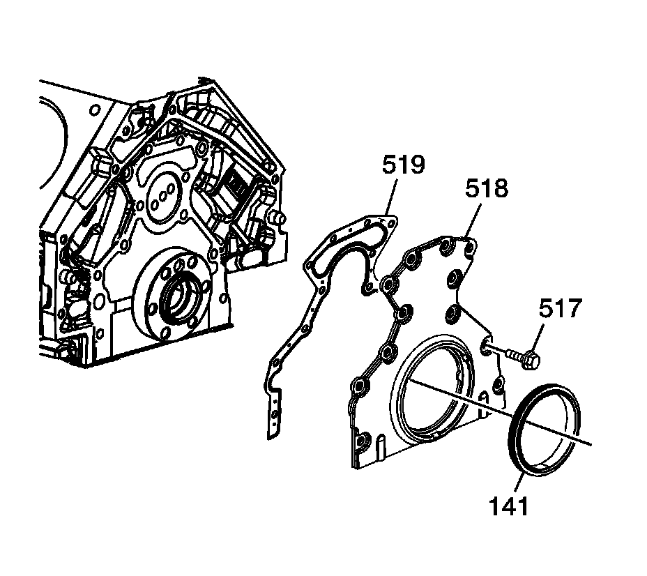

75. Crankshaft Rear Oil Seal Housing Installation
Crankshaft Rear Oil Seal Housing Installation
Tools Required
^ J 41476 Front and Rear Cover Alignment Tool
^ J 41480 Front and Rear Cover Alignment

Important:
^ Do not use the crankshaft rear oil seal or the engine rear housing gasket again.
^ Do not apply any type of sealant to the rear housing gasket, unless specified.
^ The special tools in this procedure are used to properly align the engine rear housing at the oil pan surface and to center the crankshaft rear oil seal.
^ The crankshaft rear oil seal will be installed after the rear housing has been installed and aligned. Install the rear housing without the crankshaft oil seal.
- The crankshaft rear oil seal MUST be centered in relation to the crankshaft.
- The oil pan sealing surface at the rear housing, and the engine block, MUST be aligned within specifications.
- An improperly aligned rear housing may cause premature rear oil seal wear and/or engine assembly oil leaks.
Inspect the rear oil gallery plug for proper installation.

1. Install the rear housing gasket (519), rear housing (518), and bolts (517).
2. Tighten the bolts finger tight. Do not overtighten.
Notice: Refer to Fastener Notice.
Important: Start the J 41480 tool-to-rear housing bolts. Do not tighten the bolts at this time.
3. Install the J 41480 and bolts.
Tighten the tool-to-engine block bolts to 25 N.m (18 lb ft).
Important: To properly align the rear housing, the J 41476 must be installed onto the rear of the crankshaft with the tool mounting bolts parallel to the oil pan surface.
4. Rotate the crankshaft until 2 opposing flywheel bolt holes are parallel to the oil pan surface.
Important: The tapered legs of the alignment tool must enter the rear housing oil seal bore.
5. Install the J 41476 and bolts onto the rear of the crankshaft.
1. Tighten the tool mounting bolts until snug. Do not overtighten.
2. Tighten the J 41480 tool-to-rear housing bolts evenly to 12 N.m (106 lb in).
3. Tighten the rear housing bolts to 30 N.m (22 lb ft).
6. Remove the tools.
7. Measure the rear housing-to-engine block oil pan surface for flatness.
1. Place a straight edge onto the engine block and rear housing oil pan sealing surfaces.
Avoid contact with the portion of the gasket that protrudes into the oil pan surface.
2. Insert a feeler gage between the rear housing and the straight edge. The housing must be flush with the oil pan or no greater than 0.5 mm (0.02 in) below flush.
8. If the rear housing-to-engine block oil pan surface alignment is not within specifications, repeat the housing alignment procedure.
9. If the correct rear housing-to-engine block alignment at the oil pan surface cannot be obtained, replace the rear housing.